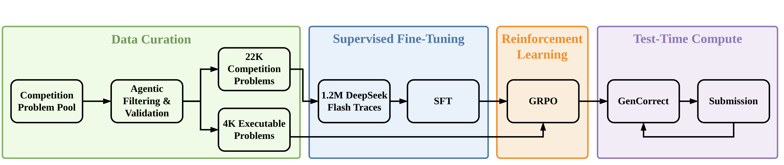
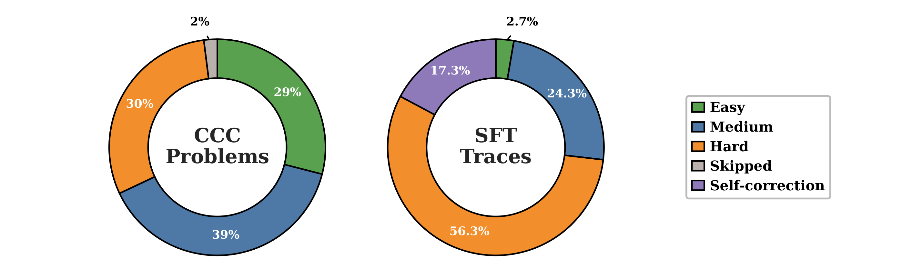
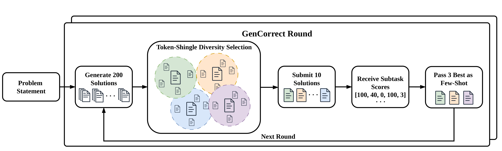
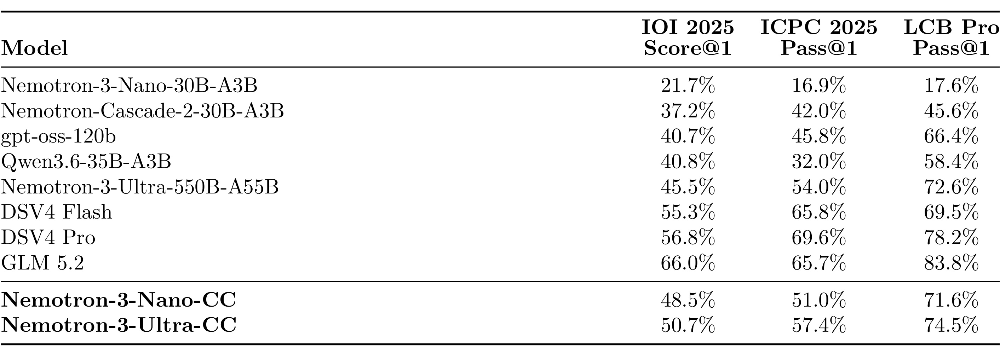
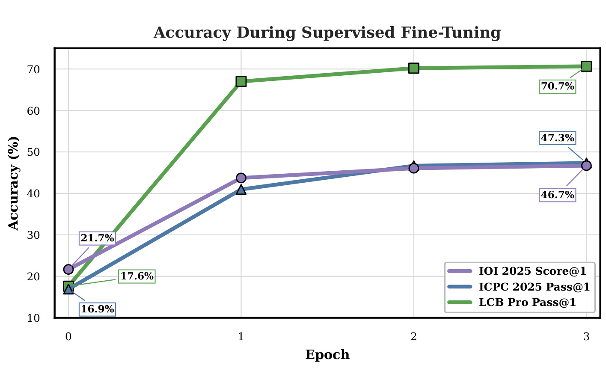
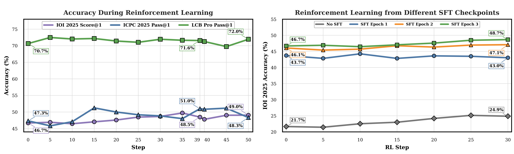
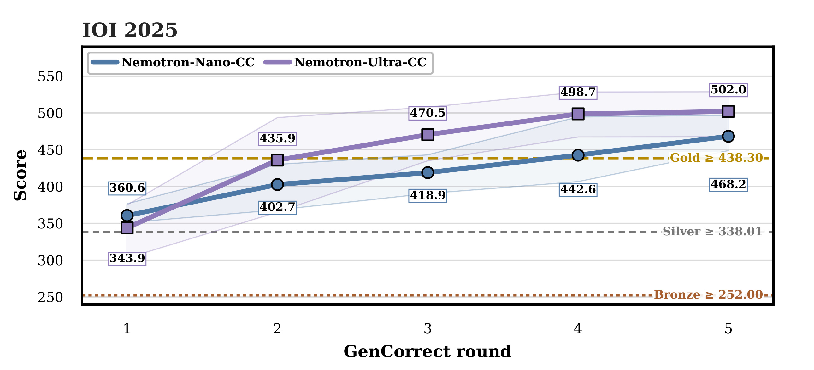
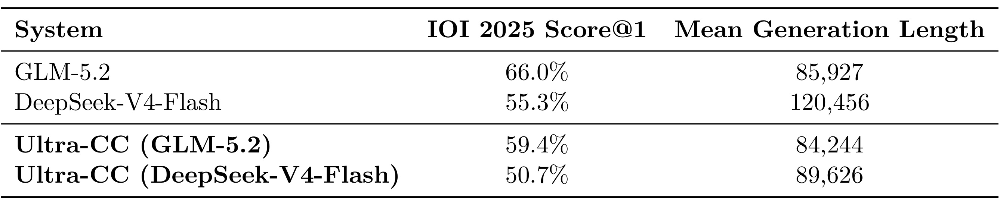
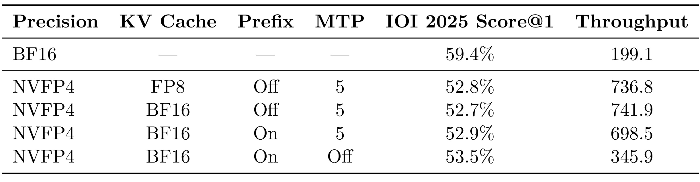
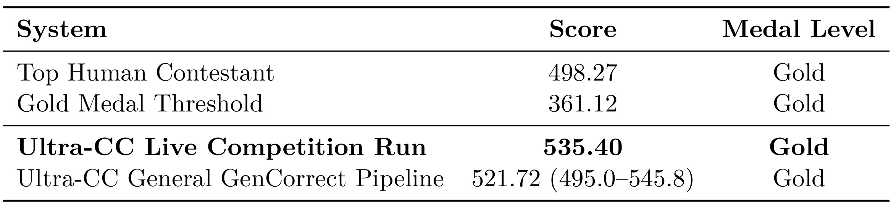

Post-Training Language Models for Gold-Medal Performance in Coding Competitions 精读笔记
这篇论文由 Aleksander Ficek、Sean Narenthiran、Mehrzad Samadi、Somshubra Majumdar 和 Boris Ginsburg 撰写，一作主机构为 NVIDIA，于 2026 年 9 月 2 日提交到 arXiv:2609.02849。它不只报告一个高分模型，而是尝试将竞赛编程的数据筛选、合成推理轨迹、监督微调、可执行奖励强化学习与测试时修正放在一条链上比较。作者指向的项目基础设施是公开的 NeMo-Skills；但截至 2026 年 9 月 4 日，论文用的竞赛版 Ultra-CC checkpoint 与对应可运行配方在原文中仍表述为“计划发布”，不能把通用仓库存在等同于本论文全部资产已开源。
竞赛编程系统往往同时改变训练数据、后训练策略、模型规模和推理时计算，甚至完全闭源，因而很难辨别“单样本能力变强”与“用更多候选和反馈追分”各自贡献了多少。论文要填补的正是这个可归因、可对照的系统缺口。
1. 背景和问题
1.1 竞赛编程为何不是普通代码生成
普通代码基准常把任务压缩成函数补全或对少量可见测试用例求解，而 IOI 与 ICPC 要求模型在长题面中识别隐藏算法结构，同时处理复杂度、边界条件、工程实现与隐藏测试。IOI 2025 有 6 道题，每题 100 分，内部又分为不同输入约束的子任务；参赛者可通过完成部分子任务获得部分分，但每题最多只能提交 50 次。ICPC 2025 则是 12 道题、五小时、三人共用一台电脑，且评分是二值的：通过所有隐藏测试才算解出。这两种反馈粒度的差异，后面直接决定了 GenCorrect 能否持续从多轮评估中得到新信息。
评价这类系统还不能只看一个终局分数。一个高分可能来自更强的 base model，也可能来自数百次并行采样、执行筛选和竞赛反馈。如果把这些因素绑在一起，就会把“模型第一次就能写对”、“200 个候选里总有一个能写对”与“看到子任务得分后会改正”混为一谈。本文因此并列 Score@1、Score@200 和五轮 GenCorrect，再把 Nano 的 SFT/RL 学习曲线拆开，让数据吸收、可执行奖励和测试时计算的作用可以分别观察。
在这篇工作之前，AlphaCode 系列已展示了大规模采样、过滤和行为聚类的价值，o1-ioi、o3、DeepSeek 和 GenCluster 等系统也陆续报告奖牌级竞赛表现。本文与它们的区别不是首次发明“多采样后再选”，而是在同一套数据与评估 harness 上展示阶段性增量，并用小型 MoE 和大型 MoE 观察模型规模与测试时计算的互动。这使它更像一篇系统分解报告，而不只是 leaderboard announcement。
不过，“可对照”仍然要分四层理解。第一层是数据：回溯基准要排除并去重评测题，前瞻基准则靠题目未公开建立更强时间隔离。第二层是采样：Score@1、Score@200 和有 evaluator 反馈的 50 次提交不是同一种计算预算。第三层是反馈：IOI 子任务分与 ICPC 成败二值信号对修正的指导强度不同。第四层是资源：即使时间、网络和提交规则对齐，百万级轨迹后训练和数百张 GPU 也不是人类参赛者的资源。只有将这四层分开，后文的高分才不会被误读为对单一维度“智能”的简单测量。
1.2 两个模型不是同一条训练线
论文的紧凑模型 Nemotron-3-Nano-CC 以 Nemotron-3-Nano-30B-A3B 为起点，总参数 30B、每次激活 3B，同时接受代码竞赛 SFT 和可执行奖励 RL。大模型 Nemotron-3-Ultra-CC 是 550B-A55B，以 RLVR-teacher checkpoint 初始化，只做一轮 SFT，没有代码专属 RL。原因并非作者认为 RL 无效，而是 Ultra 规模的 RL 超过当时可用计算预算。两者都能在推理时使用 GenCorrect，所以“训练时学到的能力”与“推理时借反馈换来的得分”仍有共同对照基础。
这个设计也限制了可下的因果结论。Nano 从 base 到 SFT、再到 RL 有连续曲线，可以比较后训练阶段；Ultra 则更适合回答“强初始化加有限 SFT 是否胜过对小模型做更多后训练”。因为 Ultra 没有同规模的 RL 对照，不能进一步推出“大模型做 RL 不会有用”。论文在局限中也明确承认，计算限制阻止了 Ultra RL 和跨规模完整消融。
1.3 从回溯开发到前瞻评测
主要开发与归因实验都放在 IOI 2025、ICPC 2025 和 LiveCodeBench Pro 上。作者声称将这些评测题从 SFT/RL 数据中排除并去重，但这仍是对已公开题集的回溯评测。IOI 2026 则是在题目对公众公开之前、正式比赛时间窗内运行，所以提供了更强的时间隔离证据。可是这个系统不是 IOI 官方参赛者，运行也没有由 IOI 监督，分数没有进入正式排名。因此最准确的说法是：它是在人类选手的时间、网络与提交约束下做的单次、前瞻、非官方且未监督的基准运行，而不是“AI 以官方身份获得 IOI 金牌”。
2. 方法
2.1 从 22,000 道题到差异化 SFT：数据层先建可执行环境
整条流水线先把竞赛题转化为可执行评估环境，再做轨迹合成和后训练。作者收集了过去二十年来 16 个地区或国际赛事家族与在线平台的 22,000 道题，对每道题封装题面、时空限制、测试用例、辅助文件和参考解。环境不只要让已知正确解得到预期分，还要让已知错解失败；另外用 gpt-oss-120b 生成候选程序，暴露错误题面、丢失附件、编译器不兼容和测试 harness 不一致。当正确性奖励要直接依赖这些环境时，测试器本身的错误会成为最危险的标签污染，所以这一层是后续 SFT、RL 和 GenCorrect 的共同地基。

Figure 2 的关键不在于模块数，而在于箭头经过了哪些模型。竞赛题库先经 agentic filtering 和 validation 得到 22K 道题，其中大约 4K 具有适合 RL 的可执行环境；1.2M 条 DeepSeek-V4-Flash 轨迹进入 SFT。Nano 从 SFT 继续进入 GRPO，Ultra 则跳过此代码 RL 阶段；GenCorrect 处在“Test-Time Compute”框内，说明它不更新参数。图将“单样本模型”与“提交系统”的边界画得很清楚：可以把 SFT/RL 得到的 checkpoint 单独评估，也可以再给它执行反馈和提交预算，后者不能反向宣称为模型的一次生成能力。
SFT 数据也不是 22,000 道题的等额复制。DeepSeek-V4-Flash 为 Nano 生成 1.2M 条推理轨迹，为 Ultra 生成 477,642 条；前者训练 3 个 epoch，后者只训练 1 个 epoch。两者全局 batch 均为 64，打包序列上限 262K token。Nano 用 64 张 GB300-288GB、恒定 \(5\\times 10^{-5}\) 学习率；Ultra 用 128 张同型 GPU，峰值学习率 \(1.5\\times 10^{-5}\)、cosine schedule 与 0.1 warmup ratio。这些参数说明“Ultra 用更少数据”不等于“Ultra 是低成本实验”：单步所需硬件和模型规模仍远高于 Nano。

Figure 3 左侧的题库难度比例为 easy 29%、medium 39%、hard 30%、skipped 2%，数据源本身并没有被“全是奥赛最难题”占据。右侧的 SFT 轨迹却显著向难题倾斜：easy 2.7%、medium 24.3%、hard 56.3%，另有 17.3% 是让教师基于旧解改进的 self-correction 轨迹。所以 1.2M 与 477,642 不只是数量差，还包含一种训练分布政策：将更多 teacher compute 用在难题和改错上。self-correction 样本又在行为形式上为 GenCorrect 铺路，但它不能代替测试时的真实 evaluator 反馈：前者学的是训练轨迹中的修正风格，后者才提供当前题目上哪个子任务真正通过的外部信号。
2.2 Nano 专属的可执行奖励 RL：稀疏终局信号的 GRPO
只有 Nano-CC 进入 RL。作者从约 4,000 个可执行环境出发，剔除顺序评测稳定超过 300 秒的题，剩下 3,219 题；按 parent problem 分为 2,847 训练题与 372 验证题，避免同题子任务跨集。每个优化步骤抽 64 个 prompt，每个 prompt 生成 16 条 C++17 rollout，总计 1,024 条；最大序列长度 262,144，其中生成最长可达 255,144 token。程序编译后在测试环境中执行，完全得分记 1，否则记 0，部分分不会产生中间奖励。
训练使用 GRPO 和 leave-one-out baseline，对 token-level clipped policy-gradient objective 做 Adam 优化，学习率 \(3\\times 10^{-6}\)，没有 reference-policy KL penalty；超过最大上下文被截断的生成不进入 policy loss。对同一 prompt 的 16 个 rollout，只有当组内同时有成功和失败时才有相对优势信号；如果全错或全对，组内归一化就很难提供方向。再加上可达 255K token 的轨迹只在终点获得一个二值分数，信用分配跨度极长。这解释了为什么 RL 主要集中在模型能力边界附近，且增益比 SFT 小。最终 checkpoint 不是按 IOI 2025 测试分选，而是按留出验证集选中 step 39。
2.3 GenCorrect：生成、多样性选择、执行反馈与受限迭代
GenCorrect 是一个受 submission budget 约束的推理时闭环。每轮先并行生成最多 200 个候选程序并在本地编译；第一轮只看题面，后续轮次还看先前解和 evaluator 反馈。无效输出被过滤后，系统用 token shingle 相似度取最远点，选出最多 10 个聚类中心；再将其他候选分到最近中心，每簇取局部结构评分最高者提交。当前轮的所有过滤、聚类和代表选择都在看到这 10 次评分之前完成，避免将当轮比赛得分伪装成一个事前排序器。

Figure 4 把每轮的信息路径画成一个闭环：problem statement 触发 200 条生成，token-shingle 多样性选择将它们压缩成 10 条可提交解，evaluator 返回诸如 \([100,40,0,100,3]\) 的子任务分，再把 3 个互补参考解传给下一轮。底部箭头强调“修正”发生在新一轮 generation，而不是直接将某个候选的局部分数合并成一份程序。它也暴露出两种必要资源：一是远大于提交数的本地候选生成，二是竞赛平台返回的可执行反馈。如果没有可运行测试，或反馈只是一个高噪声总分，闭环可用性会显著下降。
多样性中心的选择写为：
符号解释：\(C\) 是已选中心集，\(c\) 是待选候选，\(z\) 是某个已选中心，\(\mathrm{sim}(c,z)\) 是归一化程序 token shingle 的相似度。内层最小值测量候选 \(c\) 距离“最近已选中心”多远，外层再取这个距离最大的候选。直觉上它是 farthest-first，用代码行为的覆盖面换取在 10 个提交位中命中不同算法/实现路径的机会。它的边界是 shingle 相似度并不理解算法等价性：两份表面不同的错误程序仍可能占据两个中心。
每轮提交后，对子任务 \(t\) 累积目前见过的最高分：
符号解释：\(A_r(t)\) 是到第 \(r\) 轮为止子任务 \(t\) 的最佳已观察分数，\(S_r\) 是第 \(r\) 轮实际提交的程序集，\(s_t(c)\) 是程序 \(c\) 在 \(t\) 上的分数。这个状态只用于指导后续生成，不改变 IOI 的官方评分方式。系统保留当前总分最好解，再选三个参考：总体最强者、针对最大剩余子任务 gap 的解、对其他 gap 有较广覆盖的解。这个信号比单一总分丰富，也是 IOI 多轮改进比 ICPC 更明显的重要原因。
中心初始化、并列打破和簇内代表选择共用一个不看竞赛得分的字典序 tuple：
符号解释：\(\mathrm{Compiles}\) 先保证可编译，\(\mathrm{FeatureScore}\) 奖励 header、main、I/O、return 等完整 C++ 特征并惩罚未完成占位，长度分桶和 exact frequency 倾向结构稳定的常见解，后两项用较短输出与确定性 run id 打破平局。各项按字典序比较，不是线性加权。这种规则降低了将 evaluator 分数泄漏到当轮选择的风险，但“结构完整”只是代码正确性的弱代理，真正的语义错误仍要靠提交反馈揭示。
2.4 IOI 2026 单次前瞻运行：教师切换、最终轮扩展与 NVFP4
前瞻系统不是原样复用通用 Ultra-CC。作者用 IOI 2025 作开发集，改用 GLM-5.2 生成 SFT 数据，因为它在该 harness 上比 DeepSeek-V4-Flash 得分更高且平均输出更短。前四轮仍是每题生成 200 解、提交 10 解；最后一轮将候选数放大到 1,000，但仍只能提交 10 个。为了从大候选池中选择，模型先生成 50 个题目专属的 test-input generator 和 validator，执行筛选出 100 个有效测试输入，再让所有已编译候选跑这些输入，并由模型按子任务要求生成 scoring script 做排名。这个最终轮是为单次 live run 专门设计，不能与通用五轮 GenCorrect 完全等同。
为在两个五小时窗内完成大量生成，作者又对 Ultra 做 NVFP4 训练后量化，用 1,000 条、32,768 token 的 SFT mixture 序列做校准，峰值调度最多 760 张 NVIDIA GB300 GPU。最终选择 FP8 KV cache、关闭 prefix caching、MTP 5 的配置。这里的目标不是保持单样本最高准确率，而是在固定比赛时间里生成更多候选。论文的前瞻结果实际上是模型、后训练数据、量化 serving、执行评估和提交预算共同构成的系统结果，不是某个 checkpoint 单独的裸分。
3. 实验结果
3.1 评测口径与单样本主结果
IOI 的 Score@\(k\) 先将生成解分成独立 run，每个 run 内对各子任务取最高分，再跨子任务与题目求和，最后对 run 平均。Score@1 表示单样本能力，Score@200 表示并行采样二百次的上界式能力；ICPC 和 LCB Pro 的 Pass@1 则是单个样本完全解出题目的比例。论文对 IOI/ICPC 最终结果平均 1,000 个 run，中间 checkpoint 使用 50 个 run，Score@200 用 5 个 run，LCB Pro 用 8 个 run。所有竞赛模型的分数都由作者自己的评估 harness 产生，不是从各模型报告直接复制；这提高了横向口径一致性，但也意味着结果依赖该 harness 的实现和可复核性。

Table 1 表明 Nano-CC 相比 Nano base 在 IOI 从 21.7% 升到 48.5%，ICPC 从 16.9% 升到 51.0%，LCB Pro 从 17.6% 升到 71.6%，增幅极大。Ultra-CC 相比 Ultra base 的对应变化是 45.5%→50.7%、54.0%→57.4%、72.6%→74.5%，改进较小，但三项绝对分都高于 Nano-CC 2.2、6.4 和 2.9 个百分点。这支持两个不同结论：后训练能将 3B 激活参数的 Nano 推到同类规模最强一档；当模型与推理成本不是首要约束时，强 Ultra 初始化加较少 SFT 仍能获得更高绝对分。但它们都没有在单样本表中超过 GLM-5.2，所以后面的“超越人类顶分”不能解读为单次生成已稳定更强。
转换成 IOI 2025 原始分时，Nano base 的 Score@1 为 130，完成后训练后为 291，此后借 GenCorrect 达到 468，高于当年 438.3 的金牌分数线。其中 SFT 三轮后已到 280，RL 把它推到 291；所以“130→291”是 SFT+RL 合计，而“291→468”属于使用 evaluator 反馈和 50 次提交预算的测试时收益。Ultra-CC 的单样本原始分为 304，Score@200 为 505，而五轮 GenCorrect 平均达 502；Score@200 和反馈迭代是两种不同取样/选择协议，数值接近不代表两者等价。
3.2 SFT 提供主增量，RL 只在前沿附近追加

Figure 6 让 SFT 增益的时间分布可见：经过 3 个 epoch，IOI Score@1 从 21.7% 到 47.3%，ICPC Pass@1 从 16.9% 到 46.7%，LCB Pro Pass@1 从 17.6% 到 70.7%。三条曲线最陡的部分都在第一个 epoch，后续逐步饱和；其中 LCB Pro 第一轮就跃迁到接近最终水平，说明 teacher trace 中的代码求解模式可以快速迁移。但这张图不能区分“新算法知识”、“长推理格式模仿”和“自我修正样本”各自贡献，因为论文没有对 SFT mixture 做分量消融。饱和只能证明当前数据/超参数下继续 epoch 边际收益下降，不能证明更高质量的新轨迹无用；也不能用该图推导其他规模模型的最佳 epoch 数。

Figure 7 左图从第三个 SFT checkpoint 出发，RL 将 IOI 从 46.7% 提到所选 step 39 的 48.5%，ICPC 从 47.3% 到 51.0%，LCB Pro 从 70.7% 到 71.6%。曲线并非单调：例如后续 step 的某些指标更高、某些反而回落，作者按独立验证集选 step 39，没有用三个测试基准的峰值拼出结果。右图表明不做 SFT 时，RL 训练 30 步仅把 IOI 从 21.7% 提到 24.9%；从 SFT epoch 1/2/3 开始的结果约为 43.0%、47.1%、48.7%。因此可执行 RL 确实可以从 base 直接学到一点东西，但在本文预算和二值奖励下，远不能替代强 teacher SFT。这个结论对实务很重要：如果可执行 reward 非常稀疏，先用高质量轨迹将策略推入“一组 rollout 有成有败”的可学区域，比让 RL 从大量全失败组中摸索更高效。
3.3 GenCorrect 放大 Ultra 的候选池优势

Figure 8(a) 中，Nano-CC 的 IOI 2025 平均分从第一轮 360.6 上升到第五轮 468.2，增加 107.6 分，第四轮 442.6 首次越过 438.3 金牌线。Ultra-CC 第一轮反而只有 343.9，低于 Nano，但第二轮跳到 435.9，第三轮 470.5 已越过金牌线，第五轮达 502.0，总增量 158.1 分。阴影区是每轮 5 次 run 的 min-max，不是置信区间；样本数较小，不宜用阴影重叠与否做强统计显著性判断。曲线支持的是 Ultra 能从并行候选和多轮反馈中挖出更多增量，不是它的第一轮就必然更好。这与 Score@1 中 Ultra 只比 Nano 高 2.2 个百分点、到 Score@200 时却拉大到 44 个 IOI 原始分的现象一致。
ICPC 的文本结果也形成一个有用对照。Nano 从第一轮平均解 8.6 题到第三轮 9.4 题后基本平台，Ultra 从 9.0 到第二轮 9.6 后就不再上升。IOI 的子任务分可以告诉模型“哪部分算法已经成功，哪部分仍有 gap”，ICPC 二值反馈只告诉整题通过或失败，信息密度更低。因此 GenCorrect 迁移到代码 Agent、推荐训练数据生成或工具使用时，决定成败的不只是生成量，还有评估器能否返回可定位的局部信号。
3.4 IOI 2026：强分数、强约束与强口径

Table 2 显示 GLM-5.2 在 IOI 2025 上得 66.0%，平均生成 85,927 token；DeepSeek-V4-Flash 为 55.3% 和 120,456 token。这个差异传递到学生后，用 GLM-5.2 轨迹微调的 Ultra-CC 得 59.4%，平均 84,244 token；DeepSeek 版是 50.7% 和 89,626 token。前瞻系统因此不只选了得分更高的 teacher，也选了在固定十小时窗内更容易扩大候选数的较短轨迹。这个对照不能证明长轨迹一般更差：两个 teacher 的能力与风格同时变了，没有在同一模型上只控制输出长度。它能支持的是工程选型需同时考察单样本分数和生成速度，并在一个固定 wall-clock 内评估候选数的边际价值。

Table 3 把这种选择定量化了。BF16 baseline 的 IOI 2025 Score@1 为 59.4%、吞吐 199.1 tokens/s/GPU。在同为 BF16 KV cache 并开启 prefix 的 NVFP4 配置下，将 MTP 从关闭改为 5，吞吐从 345.9 升到 698.5，Score@1 只从 53.5% 降到 52.9%。前瞻运行真正选的是 NVFP4 + FP8 KV cache + prefix off + MTP 5，分数 52.8%、吞吐 736.8。相对 BF16，论文归纳为损失 6.6 个百分点、换取 3.7× 吞吐。不过表中吞吐最高的是 NVFP4 + BF16 KV + prefix off + MTP 5 的 741.9，它并非 live 选项；所以不应把选型压缩成“只选最快”。更重要的是，3.7× 是 precision、KV cache、prefix 和 MTP 组合相对 baseline 的总体差，不能归因于单一 NVFP4 因子。

Table 4 给出的是一个史无前例但需要严格加注的结果。competition-specific Ultra-CC 在 IOI 2026 正式比赛窗口内得到 535.4/600，高于最高人类选手 498.27，也高于金牌分数线 361.12。但该系统不是官方参赛者，运行未受 IOI 监督，分数未进入正式排名；“Gold”只表示分数越过当年金牌线，不是官方授予了金牌。这是单次、无监督的 prospective run，不能使用重复试验的均值和方差来表征它。它的优点是题目当时未公开，大幅减少了训练污染的可能；它的证据局限是运行管控和可复核性不等于官方竞赛审计。
作者赛后又用标准五轮 GenCorrect 独立运行 5 次，得到平均 521.72，观察范围 495.0–545.8。live 分数比均值高 13.68，但仍落在五次范围中。这与“竞赛专用改造旨在提高单次得分”一致，却还不是严格消融：专用系统只有一次 live run，没有多个随机种子的配对对照，因而不能将 13.68 分全部归因于 GLM 教师、最终轮 1,000 候选或 NVFP4 中的任一个。同时，系统与人类在时间、网络和提交约束上对齐，却没有在计算资源上对齐：人类选手并不拥有峰值 760 张 GB300 的并行生成能力。
4. 总结
4.1 我的判断与可迁移启发
本文最有价值的不是“AI 比人高多少分”这一句话，而是它把一个高分系统分解为三种不同来源。第一类是 SFT 吸收强 teacher 的竞赛求解能力，是 Nano 单样本增益的主体；第二类是可执行二值 reward 下的 RL，能在能力边界附近补充，但受稀疏终局信号和超长轨迹限制；第三类是 GenCorrect 以大量并行候选和子任务反馈换分。这种分解比只比 checkpoint 更接近 Agent 系统的现实：系统能力是 model policy、tool execution、verifier signal 和 budget 的联合函数。
对推荐系统的直接迁移不是拿 IOI 得分代替 CTR，而是借鉴“有预算的反馈修正”。例如候选召回/排序的离线自动配置，可先并行生成多种特征组、loss 权重或检索预算方案，用代理指标和安全约束选出少量差异化代表，再把评估反馈写入下一轮。但推荐系统的离线指标和线上价值常存在偏差，远不如程序编译+隐藏测试那样确定。因而迁移时首先要投资的是 evaluator 可信度和约束审计，而不是盲目将候选生成扩大到 1,000。
4.2 局限、复现风险与后续跟进
局限至少有六点。第一，训练和推理资源极大，live run 峰值使用 760 张 GB300，与人类只是时间/网络/提交规则对齐，不是等资源对齐。第二，Ultra 没有做代码专属 RL，跨模型规模的完整 SFT/RL 消融缺失。第三，22,000 道题受第三方再分发限制，作者明说不能发布完整训练集，数据复现只能依赖构造程序描述。第四，live run 不是官方参赛实验，没有 IOI 监督，又只有一次，审计和方差证据都有限。第五，训练数据排除与去重由作者声明，除 IOI 2026 的时间隔离外，第三方无法在数据不开放时完整复核污染。第六，结论只验证竞赛编程，对真实软件工程的多文件修改、需求澄清、交互调试与长期维护能力不能自动外推。
后续建议四项。一是等待并核查论文专属 Ultra-CC checkpoint、inference recipe 和 evaluation recipe 是否真正在 NeMo-Skills 中公开，应把“仓库已公开”与“本结果可端到端复现”分开验收。二是用同一 Ultra checkpoint 做配对消融，分别关闭 GLM 教师、最终轮 1,000 候选、生成测试排名和量化，且每个设定跑多个种子，才能将 live 分数的组件贡献拆开。三是尝试将 RL 的二值终局 reward 改为子任务级、测试用例级或分阶段 reward，同时监测 reward hacking，验证长轨迹 credit assignment 是否能改善。四是在非竞赛代码 Agent 上复现“多样性生成→可执行评估→有预算反馈修正”，但必须把 wall-clock、GPU-hour、总 token、提交数和一次解成功率同时报告，避免用无上限测试时计算掩盖模型本身的单样本局限。